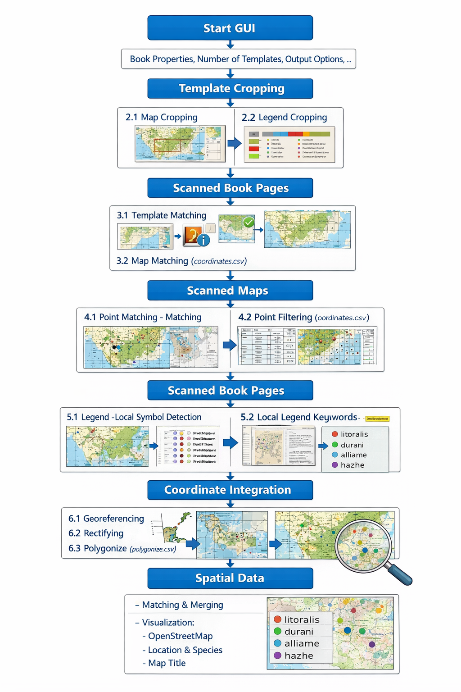

Explore the extracted species distribution data interactively on a map.
Filter by map type, page number, or data range.
🌍 Distribution Digitizer
The Distribution Digitizer is a semi-automated software framework for extracting, reconstructing,
and spatially integrating species distribution data from scanned historical maps and associated book pages.
The system combines computer vision, Optical Character Recognition (OCR), and geospatial processing
within a hybrid Python–R architecture, enabling the transformation of analogue biodiversity data
into structured and georeferenced datasets.
🧠 Concept
Historical species distributions are often available only in printed form, embedded in maps and descriptive text.
Manual digitization is time-consuming and error-prone.
The Distribution Digitizer provides a reproducible workflow that automatically:
detects maps in scanned book pages
extracts species information from legends
links species to map symbols (colors)
retrieves contextual species titles from book text
transforms detected points into spatial data
integrates all information into a unified dataset
⚙️ Workflow
The software follows a structured multi-stage pipeline:

🔄 Processing Pipeline
1. GUI-Based Configuration
Users define book metadata, legend keywords, map types, and processing parameters.
2. Template Preparation
Map cropping for detection
Legend symbol extraction for template matching
3. Map Detection (Book Pages)
Template matching identifies map regions
Alignment of detected maps
4. Map Processing
Point matching using symbol templates
Filtering of detected points
Masking and OCR-based legend analysis
5. Species Extraction (Text)
OCR-based extraction from book pages
Keyword detection and filtering
Pattern recognition (e.g. publication years)
Multi-page fallback strategies
6. Spatial Processing
Georeferencing
Rectifying
Polygonization
7. Data Integration & Visualization
Matching species, titles, and coordinates
Visualization using OpenStreetMap
📊 Example
Input
Output
🧪 Methodological Highlights
OCR-based text extraction (Tesseract)
Robust keyword matching (Levenshtein similarity)
Template matching using OpenCV
Combined local and global symbol detection
Integration of textual and spatial data
🚀 Recent Improvements
Significant effort has been invested in improving performance and scalability in the latest development version.
Reduction of redundant computations
Optimized template matching workflows
Improved memory handling
Preparation for parallel processing of large datasets